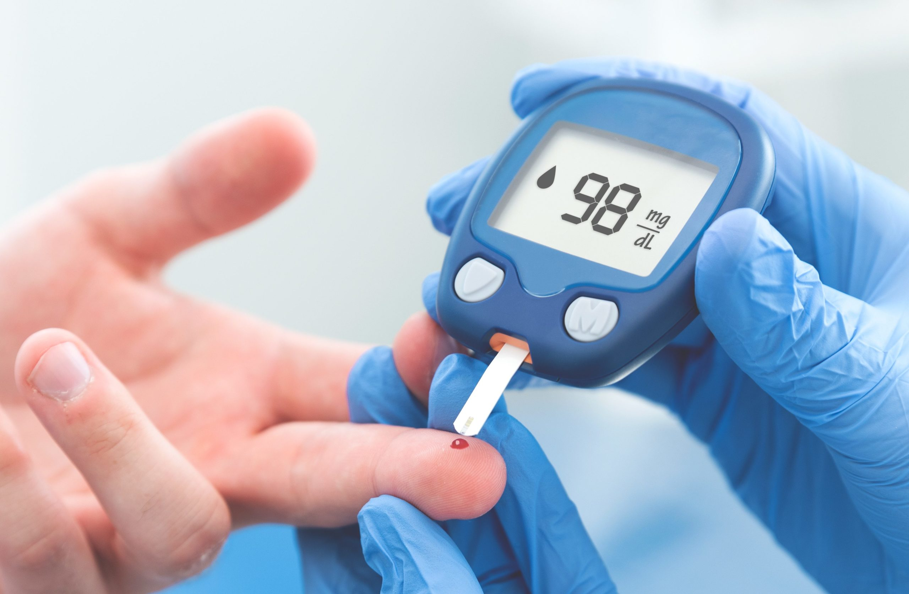

Diabetes
La diabetes es una enfermedad crónica (de larga duración) que afecta la forma en que el cuerpo convierte los alimentos en energía. El cuerpo descompone la mayor parte de los alimentos que come en azúcar (glucosa) y los libera en el torrente sanguíneo.

Causas
Depende del tipo de diabetes. En la Diabetes Tipo 1, el sistema inmunitario ataca y destruye las células del páncreas que producen insulina. En la Diabetes Tipo 2 (la más común), el cuerpo se vuelve resistente a la insulina o el páncreas no produce suficiente.
Síntomas
- Aumento de la sed y de la micción.
- Aumento del hambre.
- Fatiga extrema.
- Visión borrosa.
- Llagas que tardan en sanar.
Pruebas y exámenes
Las pruebas más comunes son la prueba de hemoglobina glicosilada (A1C), que indica el nivel promedio de azúcar en la sangre de los últimos dos a tres meses, y la prueba de azúcar en la sangre en ayunas.
Tratamiento
El tratamiento varía según el tipo de diabetes. Incluye el control de la presión arterial y el colesterol, inyecciones de insulina (especialmente para el Tipo 1), medicamentos orales, una dieta balanceada y ejercicio físico regular.
Expectativas (pronóstico)
La diabetes no tiene cura en la actualidad, pero perder peso, comer alimentos saludables y estar activo puede ayudar significativamente. Un buen manejo médico previene complicaciones graves como enfermedades del corazón o problemas de visión.
Video explicativo sobre la Diabetes
Recuerde que puede activar los subtítulos generados en el menú del reproductor.